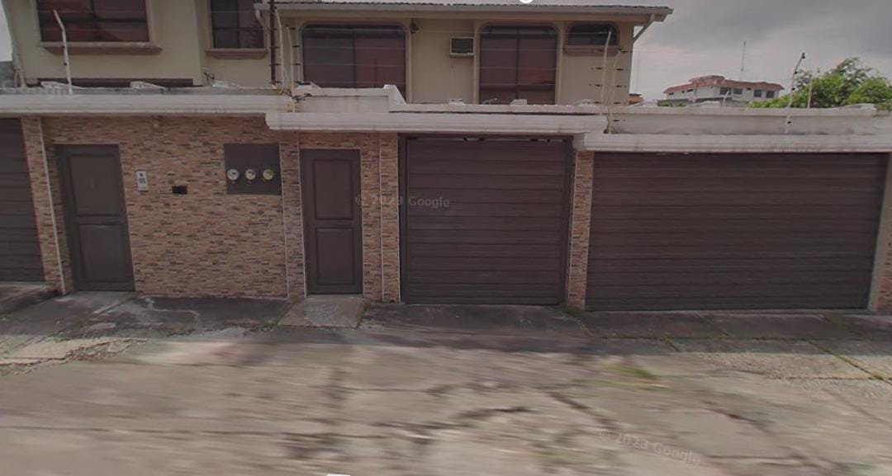

Creamos una tienda de ropa, ya que es una aventura apasionante que combina tu estilo personal con
habilidades
empresariales. Primero, tuvimos que definir el concepto de tu tienda: ¿sera casual, formal, deportiva o
sostenible?
Debemos conocer a nuestro publico objetivo ya que nos ayudara a seleccionar el tipo de prendas y la
estetica ade-
cuada. Luego, realizamos un estudio de mercado para identificar competidores y analizar tendencias. Esto nos
per-
mitira encontrar una ubicacion estrategica que atraiga a los clientes potenciales, como una calle con mucho
trafico
peatonal. Tambien consideramos los factores como el tamaño del local y el costo del alquiler.
Nuestro emprendimiento de ropa nace con la mision de ofrecer prendas
que fusionan estilo, comodidad y sostenibilidad. En un mundo donde la
moda rapida predomina, buscamos crear una alternativa responsable,
priorizando la calidad y el respeto por el medio ambiente. Nos dirigimos
a personas que valoran no solo la estetica, sino tambien el impacto de
sus decisiones de compra.
Nuestra coleccion esta diseñada para adaptarse a diferentes estilos de
vida, desde atuendos casuales hasta opciones mas elegantes. Utilizamos
materiales organicos y reciclados, garantizando que cada prenda no solo
luzca bien, sino que tambien contribuya a la conservación del planeta.
Cada pieza es elaborada con atencion al detalle, destacando la artesania
y el diseño original, para que nuestros clientes se sientan unicos y autenticos.